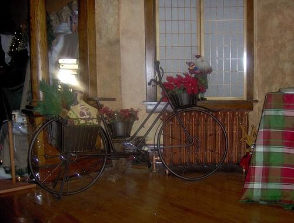

1.063245

1.071100
1.154853

1.182335

1.248072

1.255564

1.282337

1.301681

1.305100

1.326105
| Target image | 1.063245 | 1.071100 |  1.154853 | 1.182335 | 1.248072 | 1.255564 | 1.282337 | 1.301681 | 1.305100 | 1.326105 |
Target image |  22009.380859 |  17618.187500 |  16657.158203 |  14863.310547 |  13343.939453 |  12709.202148 |  9997.901367 |  9697.832031 |  9067.347656 |  8554.773438 |
Target image |  21314.992188 |  17383.433594 |  17158.740234 |  17037.443359 |  15500.740234 |  14748.558594 |  13447.046875 |  13430.454102 |  12236.436523 |  11639.834961 |
Target image |  20602.304688 |  19501.146484 |  18004.533203 |  16520.759766 |  15419.378906 |  14770.324219 |  14412.500977 |  13628.458008 |  12665.873047 |  11734.606445 |
Target image |  19076.111328 |  18590.548828 |  17949.916016 |  17625.746094 |  14650.751953 |  14263.594727 |  13968.551758 |  12644.896484 |  12118.136719 |  11864.815430 |